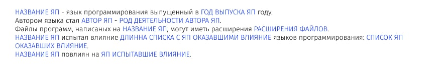

-
Составить 3 мини-рассказа, используя исходные данные и
соблюдая следующие требования:
- - Если длина списка с ЯП испытавшими влияние больше 4,
то показывать только первые 4 элемента списка и делать
приписку “и другие языки программирования”.
- - Перед расширениями файлов должна стоять точка.
- Структура рассказа должна соответствовать шаблону.

-
Перед выводом информации в консоль, предупредите, что
информация будет выведена через 10 секунд и запустите
обратный счетчик.